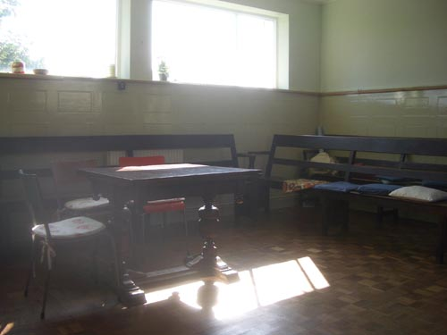
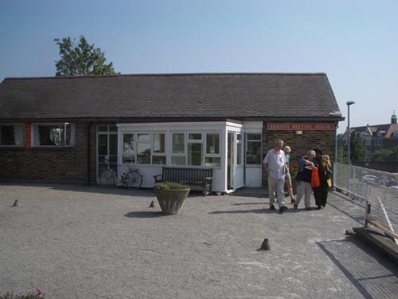

| there are some things which one says over and over because they seem sort of true - it's nice to pretend that they are true - and be the bearer of that truth - one of those things for me is to announce with absolute certainly that the best time to come to london is the first two weeks in september - and so it has been this year - beautiful warm clear days

sunday morning and i am off to tottenham - another quaker meeting - they moved the table into the centre of the room - and made a circle of chairs - at one point i looked down and realised that our feet were closer together than our heads
later someone stood up and gave his version of the lord's prayer - which ended with oh lord please don't test us too much - at work i'm always saying you can't test enough - i smiled
it was their garden party - therefore childrens' day - so the children came into the meeting early and whispered and fidgeted until the game of handshake erupted at the end
the presence of the children shows that it's not just a meditation club - yet i can't quite imagine how a child's attitude to these meetings develops over time - so far i've only seen the little ones who drape themselves over their parents and rather mournfully behave
the little meeting hall is built on the roof of a supermarket - which is on the site of the original much larger meeting house - which had been there for centuries - the burial ground is now the garden - sandwiches in the shade - a little islamic prayer mat laid on the grass at our feet in the sun

i must learn to keep my sword in its sheath on these visits - i get excited and want to split hairs - i have to keep saying to myself - velvet paws michael - velvet paws
|